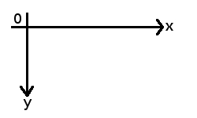
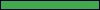
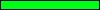

Avant de commencer, vous devez savoir que la plupart du temps, les thèmes sont constitués de deux fichiers. Un fichier .xml et un autre .theme : dans le premier, qui est optionnel, on va placer toutes les informations relatives à notre thème tel que son nom, sa version, qui l'a créé (c'est vous, ça ;) ) et d'autres informations comme votre adresse e-mail... Voici ce que vous devez placer dans ce fichier .xml :
Je pense que vous avez réussi à remplir les champs les plus "simples" tels que name, author, etc... Je vais donc m'occuper des autres champs que vous n'avez peut-être pas su remplir.
themefile
Ici c'est simple : vous mettez le nom du fichier .theme que vous allez créer par la suite. Par exemple : mon_premier_theme.theme.
python_module
Là, vous mettrez le nom du module python associé à votre fichier. Ce module est optionnel et comme pour l'instant on n'en a pas créé, vous laisserez ce champ vide. ;)
license
Bon : ça, je pense que vous avez su remplir, mais comme vous êtes censés être des zéros, on va quand même en parler. Là, vous devez mettre la licence sous laquelle est votre thème. La plus courante est GPL, mais vous avez le choix de mettre la licence que vous souhaitez. ;)
Le deuxième fichier est votre fichier .theme, et on va s'en occuper maintenant. :)
La base de tout fichier thème
Dans cette partie, vous verrez comment créer votre premier thème et comment lui mettre (ô merveille des merveilles !) une image de fond. :D Tout d'abord ,il faut savoir que contrairement à ce que l'on aurait pu penser, les thèmes pour Karamba ne sont pas développés avec un langage connu tel que le Python, le Java, ou le C++ ; en fait, ils utilisent une syntaxe particulière relative à SuperKaramba. Cette syntaxe est bien plus simple (pour les néophytes) à utiliser qu'un langage de programmation. Ceci mis au point, on peut commencer !
Les commentaires
Tout d'abord, afin de rendre votre code plus lisible, il sera judicieux de le commenter : pour ce faire, on retrouve une syntaxe présente dans le sources.list, oui je veux bien parler de : ##. Par exemple :
## ceci est un commentaire !
ceci n'est pas un commentaire !
Les paramètres généraux
Ces paramètres constituent la base de votre thème ! C'est grâce à eux que vous définirez la largeur, la hauteur, la position, etc., de votre thème ! Ces paramètres tiennent sur une seule ligne et sont précédés de la commande : karamba. Voilà ce que ça donne :
Alors, comme vous avez pu le constater, on trouve bien karamba en début de ligne ; ensuite, le paramètre w représente la largeur de votre applet, le paramètre h représente quant à lui la hauteur (vous n'auriez jamais deviné, n'est-ce pas ? :D ), le paramètre suivant, locked, définit si votre thème est déplaçable ou non ; si on met true, le thème est verrouillé (locked) et l'utilisateur ne peut alors plus le déplacer ; si on met false, il est alors déplaçable. Ce paramètre n'est pas très important car d'un simple clic droit sur votre thème, l'utilisateur peut le modifier. ;)
Ensuite, qu'est-ce qu'on trouve ? Ah, interval : enfin quelque chose d'intéressant ! C'est ce paramètre qui fixe le temps de rafraîchissement de votre thème ! Le temps est ici donné en millisecondes, donc si vous mettez une valeur de 1000, votre thème sera rechargé toutes les secondes ! ;)
Les deux paramètres suivants ne sont pas intéressants : si vous n'avez pas quitté le cycle scolaire avant la 3e, vous devriez connaître les repères, eh bien c'est la même chose sauf que là, l'origine est placée dans le coin supérieur gauche, et non pas inférieur gauche ! Pour ceux qui ne se rappellent pas de leur cours de math, x représente l'axe des abscisses (horizontal) et y l'axe des ordonnées (vertical). Ici, x et y représentent respectivement la position horizontale et verticale de l'objet courant, soit votre thème. ;)
Pour ceux qui auraient du mal à visualiser :

Voilà, voilà c'est tout ! Vous avez créé votre premier thème ! Bon d'accord : il est vide :D mais il existe ! C'est un bon point ça, non ? :p
Une image de fond
Ou : le moment où on se rend compte qu'on ne s'est pas cassé le c** pour rien. :D Si vous avez suivi jusque-là, bravo : vous avez survécu à la partie la plus facile de la création d'un thème. ;) ( :-° ) Maintenant on reste toujours dans le simple, mais cette fois, on va pouvoir voir ce que donne nos petites lignes de code. :) Pour insérer une image de fond, il faut utiliser la commande image. Cette dernière est plus facile à utiliser que la précédente, tout du moins elle nécessite moins de paramètres !
Comme précédemment, x et y représentent la position en abscisse est en ordonnée de l'objet courant, soit de votre image ! Le paramètre suivant : path représente l'adresse de votre image. Comme vous avez dû le découvrir depuis longtemps, sous Linux, ./ représente le dossier courant. Donc ici, on va afficher l'image : background.png qui se trouve dans le même répertoire que votre fichier de thème !
Le dernier paramètre, name, eh bien je suppose que vous avez compris. ;)
Sauvez, lancez votre thème ! Tadaaam ! Vous avez une superbe image sur votre bureau !!! Mais vous êtes devenus des pros de superkaramba, dites donc ! :soleil: Bon, ben, je n'ai plus qu'à y aller, moi ! Ciao ;)
Quoi ? Vous avez encore besoin de moi ? Ah bon ? Bon, ben on continue, alors !
SuperKaramba nous permet d'intégrer des éléments qui se rafraîchissent d'eux-mêmes toutes les x millisecondes dans nos thèmes, ces éléments sont appelés : "Meters". Enfin, c'est ainsi qu'on les nomme en anglais en tout cas :euh: donc bon, ben, on va faire pareil, hein ! ^^ Les Meters sont au nombre de 5. Découvrons-les tout de suite !
Les images
Bon, ben ça, c'est facile ! On l'a déjà utilisé pour mettre une image de fond à notre thème ! Ce meter permet d'afficher des images à la position désirée, les images peuvent être : (semi-)transparentes et chargées directement d'Internet ! La commande commence par : image. Nous allons lister ici tous ses paramètres :
x : l'abscisse du coin supérieur gauche de l'image ;
y : l'ordonnée du coin supérieur gauche de l'image ;
path : l'adresse de l'image
Sachez que le paramètre name que l'on a utilisé précédemment existe mais il est optionnel et rarement utilisé ; c'est pourquoi on ne l'a pas mis ici. ;)
Le texte
Ah ! Moment joyeux que celui où vous verrez enfin apparaître du texte sur votre widget ! Car en effet, le meter que nous allons étudier permet bien d'afficher du texte à la position indiquée ! En début de commande, on placera : text. Voici ses paramètres :
x : abscisse du coin supérieur gauche de la première lettre du texte ;
y : ordonnée du coin supérieur gauche de la première lettre du texte ;
w : largeur de la zone dans laquelle est placé le texte (optionnel) ;
h : hauteur de la zone dans laquelle est affiché le texte (optionnel) ;
align : position du texte :
left,
center,
right ;
font : la police qui sera utilisée ;
fontsize : le taille de la police utilisée ;
color : la couleur du texte (RVB) par défaut à 0,0,0 (noir) le maximum est 255,255,255 (blanc) ;
value : le texte qui sera affiché ;
shadow : ajoute une ombre à n pixels du texte (la valeur peut-être négative ;) ) ;
bgcolor : la couleur de l'ombre (RVB) par défaut à 0,0,0 ;
fixedpitch : pour justifier le texte s'il est affiché dans une certaine zone ;) .
Exemple :
text x=5 y=5 align=left font="Arial" fontsize=12 color=0,0,0 value="Oh ! Du texte !" shadow=0
Dans cet exemple, on affiche : "Oh ! Du texte !" à 5 centimètres du haut et de la gauche des bords de notre thème, le texte est de couleur noire, ne possède pas d'ombre, il est écrit avec la police Arial et sa taille est de 12.
Points supplémentaires
Lorsque vous utiliserez les paramètres w et h, le texte ne pourra dépasser de cette zone ! S'il arrive au bout de la ligne, il descend et s'il est tout en bas, il n'apparaît plus ! Par ailleurs, afin de réduire la longueur de votre code, une autre fonction a été créée : defaultfont : cette fonction prend les mêmes paramètres que text hormis : value, x et y ! Une fois que vous aurez défini les paramètres par défaut, ils resteront les mêmes pour tous vos textes, vous n'aurez donc pas besoin de les saisir à nouveau chaque fois ! Pratique, non ? :)
Des graphiques
Avec les graphiques, vous allez pouvoir symboliser pas mal de choses, par exemple le taux d'utilisation du CPU ! La courbe évolue de gauche à droite. En début de commande, vous utiliserez cette fois : graph. Voici les paramètres :
x : abscisse du coin supérieur gauche du graphique ;
y : ordonnée du coin supérieur gauche du graphique ;
w : largeur de la zone dans laquelle est affiché le graphique (optionnel) ;
h : hauteur de la zone dans laquelle est affiché le graphique (optionnel) ;
points : nombre de points de la courbe ;
min : valeur minimale de la courbe ; par défaut : 0 ;
max : valeur maximale de la courbe ; par défaut 100 ;
color : couleur de la courbe ; par défaut : 0,0,0.
Là, on crée une courbe de 200 sur 50, de couleur noire, dont la valeur minimale est 0 et la valeur maximale 100. Elle est placé à 10 pixels des bords supérieur et gauche du thème.
Eh bien en fait, ce que je ne vous ai pas dit, c'est que ce meter comme tous les autres a deux paramètres supplémentaire : interval et sensor. Nous en parlerons dans à la fin de cette partie. Si vous voulez, vous pouvez directement y aller et revenir ici plus tard, ce sera mieux pour vos tests ; néanmoins, je ne m'en servirai pas pour le moment, considérant que vous avez bien sagement suivi tous les points dans l'ordre. ^^ Ceci dit, on peut continuer.
Les barres de progression
Ce meter permet d'afficher des barres identiques aux barres de progression à la position désirée. Pour la barre, ce meter utilise une image, elle peut être, comme précédemment, transparente ou semi-transparente. En début de commande, vous placerez : bar. Voici ses paramètres :
x : abscisse du coin supérieur gauche de la barre ;
y : ordonnée du coin supérieur gauche de la barre ;
w : largeur de la barre (optionnel) ;
h : hauteur de la barre (optionnel) ;
path : adresse de l'image à utiliser ;
value : valeur de la barre ; par défaut : 0 ;
vertical : si on met true, la barre ne sera pas horizontale mais verticale ;
min : valeur minimale de la barre ; par défaut : 0 ;
max : valeur maximale de la barre ; par défaut : 100.
Exemple
bar x=10 y=10 vertical=false w=100 h=10 path="barre.jpg" value=50
Un petit cadeau...
Je suis généreux, je vous offre ces quelques barres de progression :
|

|
|
|

|
|
Faites-en bon usage ! ;)
Les deux derniers paramètres
Je vous avait dit qu'il y a deux autres paramètres à associer aux meter.
interval
Ce paramètre, on l'a déjà vu : c'est l'intervalle de temps qu'il y a entre chaque rafraîchissement de l'objet, assez utile si vous voulez créer un horloge, non ? Voici sa syntaxe :
interval=X milliscondes
sensor
C'est sur ce paramètre que vont être basés tous vos thèmes ! En effet, ce paramètre permet l'interaction entre votre objet et votre système. Avec par exemple l'horloge interne, le CPU mais aussi des applications comme XMMS ou d'autres programmes.
Définir une zone cliquable
Eh oui, c'est possible grâce à clickarea ! Voici ses paramètres :
x : abscisse du coin supérieur gauche de la zone ;
y : ordonnée du coin supérieur gauche de la zone ;
w : largeur de la zone ;
h : hauteur de la zone ;
preview : affiche une bordure autour de la zone si la valeur est true, sinon rien !
onclick : le programme appelé lorsque l'on clique ;
%v
Exemple
Pour que vous compreniez mieux, voici un exemple :
Comme je vous l'ai dit, les sensor vous permettent d'interagir avec votre système. Vous allez apprendre qu'il existe des sensor basiques (ceux que nous allons étudier), et des sensor plus durs à mettre en place. Ceux-ci sont dit basiques car ils permettent d'utiliser les paramètres de base du système, pour récupérer l'heure par exemple. C'est très bien pour débuter, vous verrez. ;)
Une horloge ? :o
Si je vous le dis. ;) Mais bon, comme on commence, ce sera une horloge digitale que l'on va tout d'abord mettre en place. ;) Ce sensor est spécifique à text. Dans le cas présent, vous devrez remplacer value par format. Voici les différentes possibilités d'affichage :
d : le numéro du jour (1 à 31) ;
dd : le numéro du jour avec un zéro (01 à 31) ;
ddd : abréviation du nom du jour (3 premières lettres) ;
dddd : le nom du jour ;
M : numéro du mois (1 à 12) ;
MM : numéro du mois précédé d'un 0 (01 à 12) ;
MMM : trois premières lettres du nom du mois ;
MMMM : nom du mois ;
yy : année (deux derniers chiffres ; ex : 07) ;
yyyy : année (4 chiffres, ex : 2007) ;
h : heure de 0 à 23 (ou de 1 à 12 si on a activé am/pm) ;
hh : heure de 00 à 23 (ou de 01 à 12 si on a activé am/pm) ;
m : minutes (0 à 59) ;
mm : minutes (00 à 59) ;
s : secondes (0 à 59) ;
ss : secondes (00 à 59) ;
z : millisecondes (0 à 999) ;
zzz : millisecondes (000 à 999) ;
AP : active le paramètre am/pm et remplacé par AM ou PM ;
ap : active le paramètre am/pm et remplacé par am ou pm.
Exemple
text x=10 y=3 sensor=time format=hh:mm:ss fontsize=18 color=0,0,0 font="Arial" interval=1000 align=left
Surveiller le processeur
Ce sensor peut être utilisé avec plusieurs meter comme text, graph, mais aussi bar ! Pour les meter bar et graph, il suffit de rajouter un sensor=cpu.
Il peut aussi être relié comme je vous l'ai dit à un : text. Dans ce cas comme précédemment, il existe un certain nombre de "formules" que l'on placera dans format. Voici la liste de ceux qui vous seront utiles :
%v : pourcentage total utilisé ;
%load : identique à %v mais il pourra arriver que vous le lisiez, donc je le mets ;) ;
%idle : à contrario de %v ou de %load, %idle représente le pourcentage non utilisé ;
%user : ce que vous utilisez en ce moment ;
%system : ce que le système utilise en ce moment (%user+%system=%v ;) ).
Exemple
La plupart du temps, on associera un graph et un text comme c'est le cas dans l'exemple suivant :
graph x=40 y=68 w=120 h=30 color=0,0,0 sensor=cpu interval=1000
text x=190 y=83 sensor=cpu format="%v%" align=right color=0,0,0 fontsize=9 font="Biestream Vera Sans" interval=1000
Et l'espace disque, alors ?
Puisque vous en parlez ! Oui, on peut regarder les paramètres de l'espace disque. Voici les différents attributs que vous pourrez cette fois utiliser avec la balise format (je rappelle qu'elle s'utilise uniquement avec un sensor text !).
%f - espace disque libre en Mo ;
%fkb - espace disque libre en kilobits ;
%fk - espace libre en kilobytes ;
%fg - espace libre en gigabytes ;
%fp - le pourcentage d'espace libre ;
%u - espace disque utilisé en Mo ;
%ukb - espace disque utilisé en kilobits ;
%uk - espace utilisé en kilobytes ;
%ug - espace utilisé en gigabytes ;
%up - le pourcentage d'espace utilisé ;
%t - espace disque total en Mo ;
%tkb - espace disque total en kilobits
%tk - espace total en kilobytes ;
%tg - espace total en gigabytes.
L'attribut par défaut est %u. ;)
Un exemple
text x=10 y=118 sensor=disk mountpoint="/" format="Espace utilisé total : %ug Go" align=left color=0,0,0 font size=12 font="Arial" interval=10000
image x=50 y=133 w=100 h=10 path="barre_vide.jpg"
bar x=50 y=133 vertical=false w=100 h=10 path="barre.jpg" sensor=disk
text x=180 y=131 sensor=disk format="%up %" align=right color=0,0,0 font size=9 font="Arial" interval=10000
Avec ce code, vous obtiendrez la phrase que l'on a noté dans la première ligne et en dessous, une barre de remplissage avec à côté, le pourcentage d'utilisation du disque. C'est pas beau, ça ? ^^
Contrôler l'activité du réseau
Eh oui : on peut aussi connaître la vitesse de notre connexion internet ! C'est-y pas beau, tout ça ? :soleil: :p Cette fois, vous devrez comme précédemment placer un attribut spécial avec vos meter, celui-ci se nomme device. Il sert à dire quelle interface vous souhaitez utiliser. Pour connaître votre interface, rendez-vous dans les réglages du système et allez ensuite dans Configuration réseaux : vous pourrez ainsi voir quelle interface utiliser ; chez moi par exemple, c'est : eth0. ;) Voici les différents attributs que vous pourrez placer dans format :
%in - flux rentrant en kylobytes par seconde ;
%inkb - flux rentrant en kilobits par seconde ;
%out - flux sortrant en kylobytes par seconde ;
%outkb - flux sortrant en kilobits par seconde.
Là encore, vous pouvez associer ce sensor à un graphique ou à une barre, comme cela se fait souvent !
Et comment connaître les paramètres de la mémoire vive utilisée ?
Rien de plus simple ! En effet il suffit d'utiliser memory ! Il faut aussi noter qu'en plus de la RAM, ce sensor donne des informations sur votre partition de swap ! :)
Vous croyiez en avoir fini, hein ! Avouez ! :D Eh bien non, ce n'est pas fini mais cette partie va vraiment révolutionner vos possibilités, vous allez voir !
XMMS
XMMS ? Cay koi sa ? o_O Non, ne me dites pas que vous ne connaissez pas XMMS ? En même temps, sous KDE, c'est plutôt amarok qui domine (ça fait plaisir :p ) donc je vous pardonne, mais sachez que XMMS est un lecteur audio très léger, malheureusement sa légèreté ne lui permet pas de gérer une bibliothèque. Enfin bref, ce que je vous propose est de créer un thème qui vous donnera le titre de la chanson et son temps (total et d'écoute). Cela est très facile grâce à un sensor qui porte bien son nom : xmms.
Les attributs de format
Cela va finir par devenir rituel mais nous ne pouvons pas échapper à cet élément. :D Voici donc la liste des différents attributs de la balise format :
%title - titre de la chanson actuelle ;
%time - temps d'écoute de la chanson actuelle ;
%remaining - temps restant de la chanson ;
%length - temps total de la chanson.
Et l'encodage ?
Comment ça, l'encodage ? o_O Vous n'y avez vraiment pas pensé ? Mais il faut pourtant spécifier l'encodage ! Si jamais le titre de votre chanson contient des caractères russes et que vous avez l'encodage japonais, ça ne va pas trop le faire. :-° Pour éviter ce genre de problème, on utilise : encoding ; par défaut, il utilise l'encodage de votre système mais si jamais vous devez le changer, rien de plus simple, par exemple :
encoding="ISO8859-1" ## européen de l'ouest ;)
Bon, ben voilà, vous avez tout ! Enjoy ! ;)
Mais euuuuh !!! Moi, je veux un thème pour amarok, pas pour ce p'tit truc ! :(
Ah oui, mais voilà... amarok, ce n'est pas vraiment la même musique (sans mauvais jeu de mot :p ) : en fait, il n'existe pas de sensor préconçu pour amarok ; donc, pour lui créer un thème spécifique, il faudra utiliser soit des scripts python, soit le sensor que l'on va voir maintenant : program.
L'ultime sensor : program
Selon votre préférence, ce programme vous sera soit très utile, soit parfaitement inutile. :p Moi-même, je ne l'ai utilisé qu'une seule et unique fois, enfin, je débute seulement, hein ! ;)
La syntaxe
Bon : je vais tout d'abord parler de ce qu'on connaît, je veux parler des attributs utilisés : sensor, program et encoding. Un exemple vaut mieux qu'un long discours il paraît, donc un exemple pour utiliser un programme x :
text x=5 y=5 sensor=program program="commande-x"
Vous l'aurez compris : pour l'utiliser, il faut connaître le nom du programme et la commande à appeler, autant dire que ce n'est pas d'une facilité déconcertante... :-°
Amarok...
Je vous avait dit que program n'est pas facile et qu'il faut connaître la commande à appeler, et si c'est si difficile, c'est que ça ne respecte pas la logique : nom_programme + commande. Par exemple, pour amarok, afin d'afficher le titre d'une chanson, il faut faire :
text x=5 y=5 sensor=program program="dcop amarok player title"
Bon : le player après amarok, je veux bien, mais le dcop, il vient d'où ? That's the question. :p Eh bien en fait, dcop ça vient de : Desktop COmmunication Protocol : je ne vais pas vous faire un cours dessus (y a trop de choses à dire et ce n'est pas le sujet), donc je vais vous rediriger là. Je suis généreux, je vous offre la liste de quelques commandes amarok qui pourront vous être utiles (non, ne me remerciez pas :D ) :
dcop amarok player title ;
dcop amarok player artist ;
dcop amarok player currentTime ;
dcop amarok player totalTime ;
dcop amarok player coverImage
(la suite est pour des boutons) ;)
dcop amarok player prev ;
dcop amarok player next ;
dcop amarok player playPause ;
dcop amarok player stop ;
dcop amarok player volumeDown ;
dcop amarok player volumeUp.
Avec ça, vous avez de quoi faire, je pense ;) mais si jamais vous en voulez plus, faites :
dcop amarok
(il faut qu'amarok soit lancé ;) ). Voilà ce que ça donne après un petit temps de travail :
... que vais-je faire ??? (= chanson qui passe sur Nostalgie :D )
Oui, bon, je me suis un peu emporté mais ce que vous avez pu lire ci-dessus m'a demandé pas mal d'heures de travail, je peux donc bien décompresser un peu, moi aussi. :p Bref... Arrivés à cette partie, vous devez vous poser la question fatidique : et maintenant ? Eh bien il n'y a pas 36 réponses possibles, vous avez deux possibilités, que vous allez en fait toutes les deux réaliser (vous avez intérêt, en tout cas ;) ) : 1) pratiquer, pratiquer et pratiquer ; 2) apprendre les scripts python.
Un peu d'informations sur ces scripts ?
Mais naturellement : allez voir ailleurs ! ;) Quoi ? Je n'aurais pas du dire ça :euh: ? Non, s'il vous plaît, ne me frappez pas ! Je vais vous aider !!! Bon... première étape indispensable : apprendre le python !
Et où puis-je apprendre le python ?
Eh bien il y a : le cours de ce site qui est très bien pour débuter, ensuite il vous faudra fouiller le net à la recherche d'informations ! De plus, afin de pouvoir adapter vos scripts à vos thèmes, il faut aller voir par là : http://netdragon.sourceforge.net/sbasic.html.
C'est fini ?
Eh bien oui, c'est fini ! On se quitte ici mais avant de partir, il faut que je vous donne un petit lien : http://netdragon.sourceforge.net/sinfo.html. Vous y trouverez quasiment tout ce dont vous aurez besoin. ;) Voilà : n'hésitez pas à partager vos thèmes en les mettant à disposition sur le forum ou sur KDE-Look.org ! ;)
Voilà : vous savez désormais créer vos thèmes pour SuperKaramba ! Si jamais vous avez un problème, n'hésitez pas à me contacter par MP ! ;) Personnellement, je tiens à remercier bas87, sans qui j'en serais resté au stade de zéro basique au niveau de la création de thèmes et bluestorm pour ses infos sur DCOP.